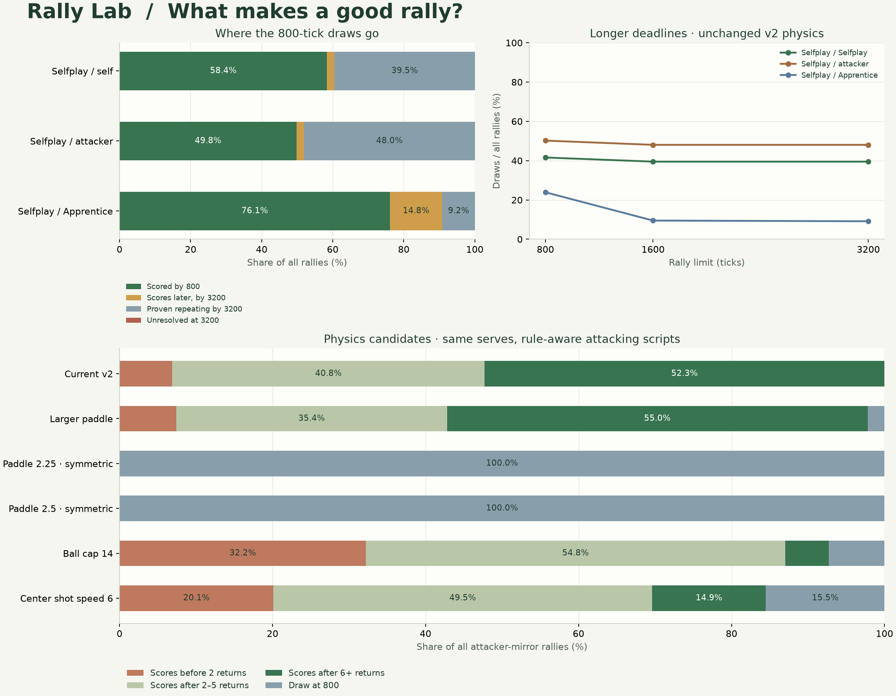

PONGARENA · EXPERIMENTAL RULE STUDY
Give good rallies
time to finish.
Evaluation only · live Pong v2 is unchanged
Long rallies can be unfinished contests or exact repeating exchanges. We continued identical serves to three deadlines, proved deterministic loops where possible, and compared modest changes to paddle movement, return speed and paddle size.
10Physics candidates screened
6Candidates on separate confirmation seeds
2,000Rallies per confirmed matchup and candidate
3 deadlines800 · 1,600 · 3,200 ticks
What the measurements say
Extending 1,600 to 3,200 recovered 7 additional points across the eight current-v2 pairings. At 800 ticks, 95.0% of the Selfplay-mirror draws were eventually proven repeating exchanges. In Selfplay vs Apprentice, however, 295 of 478 draws later became points. A longer deadline helps some matchups much more than others.

Confirmation set only. A loop proven by tick 3,200 may not yet have been detected at tick 800. Stacked bars distinguish that eventual proof from a point that simply needed more time. There are 0 unresolved, unproven rallies at 3,200 across the eight current-v2 matchups.
Does a longer deadline help?
At 30 decisions per second, the limits correspond to 26.7, 53.3 and 106.7 seconds of rally time. W / L / D is from the first named player’s perspective. Each row uses the same 2,000 openings.
| Matchup | Limit | Rallies W / L / D | Draw rate | Loops proven by limit | Draws scoring later³ |
|---|
| Selfplay vs Selfplay | 800 | 584 / 584 / 832 | 41.6% | 690 | 42 |
| Selfplay vs Selfplay | 1,600 | 605 / 605 / 790 | 39.5% | 790 | 0 |
| Selfplay vs Selfplay | 3,200 | 605 / 605 / 790 | 39.5% | 790 | 0 |
| Selfplay vs attacker | 800 | 200 / 796 / 1004 | 50.2% | 710 | 43 |
| Selfplay vs attacker | 1,600 | 200 / 839 / 961 | 48.0% | 946 | 0 |
| Selfplay vs attacker | 3,200 | 200 / 839 / 961 | 48.0% | 961 | 0 |
| Selfplay vs Apprentice | 800 | 1147 / 375 / 478 | 23.9% | 169 | 295 |
| Selfplay vs Apprentice | 1,600 | 1435 / 375 / 190 | 9.5% | 183 | 7 |
| Selfplay vs Apprentice | 3,200 | 1442 / 375 / 183 | 9.2% | 183 | 0 |
³ Later points through tick 3,200. “Loops proven by limit” is a subset of draws, not an additional outcome. The deadline changes no decisions: none of these policies observes the clock.
Longer limit, with shorter proven stalemates
A stateless deterministic model that repeats the complete physical state will make the same decisions forever. Ending that proven loop immediately preserves its eventual draw outcome. These are measured mean rally durations, excluding serves and display pauses.
| Matchup | Current 800 | 1,600 without loop exit | 1,600 with proven-loop exit |
|---|
| Selfplay vs Selfplay | 16.53 s | 27.16 s | 13.30 s |
| Selfplay vs attacker | 17.26 s | 30.17 s | 12.87 s |
| Selfplay vs Apprentice | 13.02 s | 16.93 s | 13.34 s |
Loop exit is an evaluation shortcut for deterministic controllers. It is not valid for a human, a stochastic training policy or a controller with untracked memory. The delayed proxy’s observation history is included in its cycle key. All players still need a finite maximum duration.
Physics: scoring, recovery and defense
These six candidates were selected for confirmation after the ten-candidate scan. Scripts know each candidate’s rules. The learned models keep their original v2 weights, so their results measure transfer, not how strong a retrained model could become.
| Candidate | Paddle speed | Return VX | Hit radius | AA median returns¹ | AA draws | First receiver wins⁴ | AA early points² |
|---|
| Current v2 | 2 | 5–13 | 15 | 6 | 0.0% | 53.0% | 6.9% |
| Larger paddle | 2 | 5–13 | 17 | 6 | 2.2% | 48.9% | 7.4% |
| Paddle 2.25 · symmetric | 2.25 | 5–13 | 15 | — | 100.0% | — | 0.0% |
| Paddle 2.5 · symmetric | 2.5 | 5–13 | 15 | — | 100.0% | — | 0.0% |
| Ball cap 14 | 2 | 5–14 | 15 | 3 | 7.3% | 70.7% | 32.2% |
| Center shot speed 6 | 2 | 6–13 | 15 | 4 | 15.5% | 60.5% | 20.1% |
AA = attacker vs itself. ¹ Scored rallies only. ² A point before the second return, as a share of all rallies. ⁴ Among scored attacker-mirror rallies; a value near 50% indicates little first-receiver advantage for this script. Every row uses an 800-tick limit.
Can an attacker still score?
| Candidate | Attacker wins vs defense | Draws vs defense | Delayed proxy early points² | Delayed proxy median¹ | Selfplay-mirror draws | Selfplay-mirror median¹ |
|---|
| Current v2 | 63.5% | 36.5% | 22.7% | 3 | 41.6% | 6 |
| Larger paddle | 65.5% | 34.5% | 20.2% | 3 | 88.5% | 5 |
| Paddle 2.25 · symmetric | 0.0% | 100.0% | 11.9% | 5 | 57.5% | 3 |
| Paddle 2.5 · symmetric | 0.0% | 100.0% | 2.2% | 7 | 57.9% | 2 |
| Ball cap 14 | 80.4% | 19.6% | 28.7% | 2 | 37.0% | 4 |
| Center shot speed 6 | 86.4% | 13.7% | 27.0% | 2 | 37.7% | 4 |
The delayed interceptor acts on a five-tick-old observation, including its own paddle position. It is a reaction-delay sensitivity test, not a human playtest. The attacker remains a greedy reference script, not a proof of optimal play.
See all ten candidates from the initial scan
60 seeds × five serves × both sides = 600 rallies per candidate and matchup. These exploratory results selected the confirmation set; the larger tables above use different seeds.
| Candidate | AA median returns¹ | AA draws | AA early points² | AH early points² |
|---|
| Current v2 | 5.5 | 0.0% | 12.3% | 23.8% |
| Ball cap 12 | 3 | 92.7% | 1.3% | 19.5% |
| Ball cap 14 | 2.5 | 6.7% | 32.3% | 30.0% |
| Paddle 2.25 · JS rounding | — | 100.0% | 0.0% | 13.0% |
| Paddle 2.5 · JS rounding | — | 100.0% | 0.0% | 3.7% |
| Paddle 2.25 · symmetric | — | 100.0% | 0.0% | 12.0% |
| Paddle 2.5 · symmetric | — | 100.0% | 0.0% | 3.3% |
| Paddle 2.25 + cap 14 | 2 | 80.3% | 8.7% | 23.8% |
| Center shot speed 6 | 5 | 13.7% | 21.7% | 29.0% |
| Larger paddle | 6 | 0.3% | 8.7% | 21.3% |
Fractional paddle speeds use quarter-unit positions. “Symmetric” rounds half ties away from zero for vertical shots; the original JavaScript rule rounds toward positive infinity. This difference matters only once fractional offsets are reachable. The larger-paddle candidate changes hit radius 15→17, center bounds [15,145]→[17,143], and normalizes shot response to the new radius. It preserves the speed and angle at a full edge hit. Center-shot speed 6 changes the return range to 6–13; initial serves remain at horizontal speed 5.
Fairer matches need both sides
A five-rally game gives one player three initial receptions and the other two. For model ranking, replay the same five openings with the policies exchanging sides, then aggregate the ten point outcomes. Repeat over many seeds.
| Matchup | Rally limit | Five-rally matches W / L / D | Paired ten-rally matches W / L / D |
|---|
| Selfplay vs Selfplay | 800 | 152 / 152 / 96 | 0 / 0 / 200 |
| Selfplay vs Selfplay | 1,600 | 151 / 151 / 98 | 0 / 0 / 200 |
| Selfplay vs attacker | 800 | 33 / 301 / 66 | 13 / 177 / 10 |
| Selfplay vs attacker | 1,600 | 31 / 312 / 57 | 11 / 182 / 7 |
| Selfplay vs Apprentice | 800 | 313 / 35 / 52 | 185 / 6 / 9 |
| Selfplay vs Apprentice | 1,600 | 352 / 22 / 26 | 193 / 1 / 6 |
The columns contain 400 single games and 200 paired games, respectively. Identical-model paired matches tie by construction: they receive exactly the same opportunities. Those ties show symmetry rather than a failure of attacking play. Awarding each player half a point instead of zero for a drawn rally would leave these match margins unchanged.
A measured next step
Retain the current physics for now. Faster paddles produced 100.0% and 100.0% attacker-mirror draws at speeds 2.25 and 2.5. A ball cap of 14 restored a 70.7% first-receiver advantage among scored attacker-mirror rallies. The larger paddle remains a possible human-playtest candidate, but frozen Selfplay-mirror draws rose from 41.6% to 88.5%; retraining could change that result.
Evaluate a 1,600-tick competition limit with early exits for proven model loops, and use paired side assignments for rankings. Keep a draw as a valid outcome. Physics changes deserve retraining and human playtesting before a new rules version is adopted; this study alone does not establish a universal optimum.
The existing six inputs omit the clock and match score. Time-dependent physics or deliberate end-of-match tactics would require a separate design decision. Training rewards and discounting can also change defensive behavior without changing the game.
Method and reproduction
The screen uses 60 randomly selected seeds (sampler seed 117); confirmation uses 200 separate seeds (sampler seed 118). Every configuration sees the same openings within its phase, all five serves and both policy-side assignments. Mirrored duplicates are retained. Counts are descriptive; individual rallies are not treated as independent statistical samples.
Frozen v2 PyTorch actors use deterministic first-argmax on one CPU thread. No models were retrained. Exact cycle keys contain ball position, velocity, both paddle positions, and any delayed-controller history. Scores and counters are excluded only because these policies and candidate physics do not use them.
Run .venv/bin/python training/scripts/rule_study.py for the screen. The confirmation command and verification results are in training/results/rule-study/README.md. Rebuild this page with .venv/bin/python training/scripts/rule_study_report.py. Full per-rally point times, loop times, seeds, parameters and source hashes are retained in training/results/rule-study/scan.json and holdout.json.